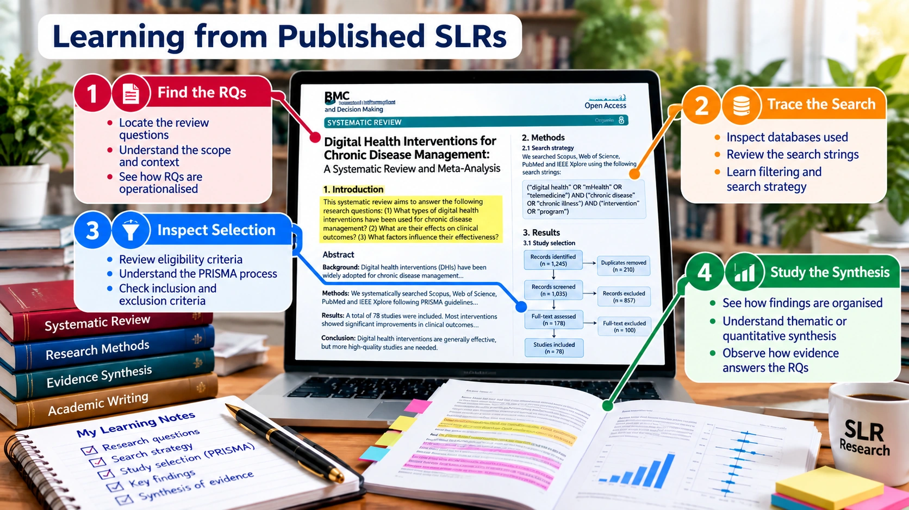

SLR FOUNDATIONS · PRE-HANDS-ON LEARNING
Published Examples & References Explore verifiable articles and methodological guidance

Read real articles with a focused analysis checklist · Click to enlarge Overview Article Types SLR Process Anatomy Templates PRISMA Quality & AI Examples Knowledge Check Real articles and reporting examples PRISMA 2020 Statement Study how review methods and flow reporting should be described.
Read source ↗ PRISMA-S Explanation Examine the details needed to report search methods.
Read source ↗ PRISMA 2020 Explanation & Elaboration Read annotated examples of reporting items.
Read source ↗ Cochrane Handbook, Chapter 4 Explore practical searching and study-selection guidance.
Read source ↗ JBI Manual for Evidence Synthesis Compare approaches for different review types.
Read source ↗ Zotero Quick Start Learn how to manage references and exports.
Read source ↗ These are verified methodological sources and guides, not six distinct discipline-specific SLR research papers. Select additional subject-area SLR examples based on the participants’ research topics.